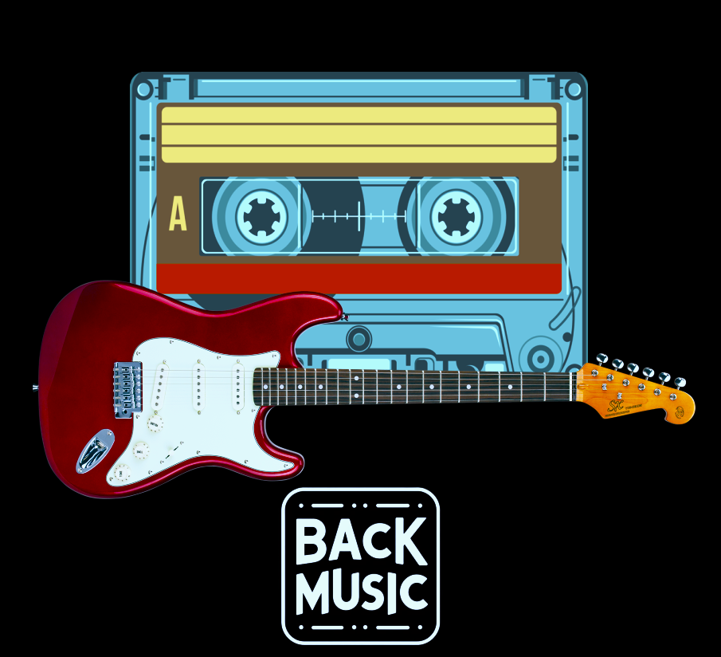

Este proyecto va a consistir en crear una aplicación web para una tienda de musica
en la que se vendan elementos de primera mano como instrumentos de música, álbumes de música
separados por categorías musicales e incluso algo de merchandising. Por otra parte habrá
una sección en la que vender instrumentos o álbumes (desde vinilos hasta CDs) y recibir dinero
por ello para poder usar en la tienda y asi tener algo de descuento en productos
